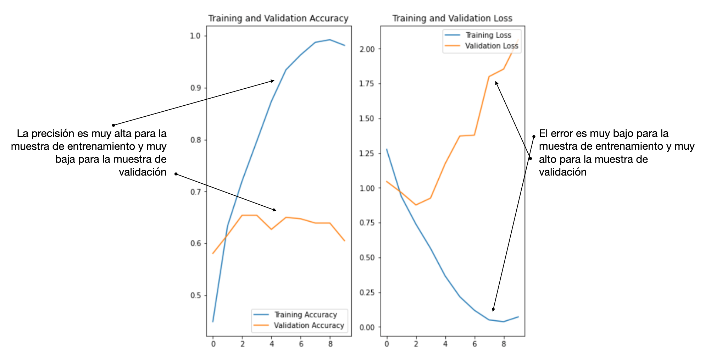

Clasificación de imágenes — 0:00 min
Última modificación: Marzo 1, 2022 | YouTube
Importación de librerías
[3]:
import os
os.environ["TF_CPP_MIN_LOG_LEVEL"] = "2"
import tensorflow as tf
Descarga de archivos de ejemplo de TensorFlow
[5]:
dataset_url = "https://storage.googleapis.com/download.tensorflow.org/example_images/flower_photos.tgz"
data_dir = tf.keras.utils.get_file(
# -----------------------------------------------------------------------------------
# Ubicacion donde seran guardados los archivos
fname="flower_photos",
# -----------------------------------------------------------------------------------
# Direccion web de los archivos
origin=dataset_url,
# -----------------------------------------------------------------------------------
# Extracción de archivos tar, zip, ...
untar=True,
# -----------------------------------------------------------------------------------
# Directorio para almacenamiento de los datos
cache_subdir="/tmp/flower_photos",
)
data_dir
Downloading data from https://storage.googleapis.com/download.tensorflow.org/example_images/flower_photos.tgz
228818944/228813984 [==============================] - 88s 0us/step
228827136/228813984 [==============================] - 88s 0us/step
[5]:
'/tmp/flower_photos/flower_photos'
[6]:
import pathlib
#
# Crea un objeto para manipular los archivos
#
data_dir = pathlib.Path(data_dir)
data_dir
[6]:
PosixPath('/tmp/flower_photos/flower_photos')
Contenido de la carpeta de ejemplos
[7]:
#
# Directorios
#
!ls -1 /tmp/flower_photos/
LICENSE.txt
daisy
dandelion
flower_photos
flower_photos.tar.gz
roses
sunflowers
tulips
[8]:
#
# Cantidad de archivos
#
len(list(data_dir.glob("*/*.jpg")))
[8]:
3670
Visualización de algunas imágenes
[9]:
import PIL
roses = list(data_dir.glob("roses/*"))
PIL.Image.open(str(roses[0]))
[9]:

Carga directa de los datos desde el directorio usando Keras
[10]:
#
# Parámetros
#
params = {
"directory": data_dir,
"validation_split": 0.2,
"seed": 12345,
"image_size": (180, 180),
"batch_size": 32,
}
train_params = {**params, **{"subset": "training"}}
val_params = {**params, **{"subset": "validation"}}
[11]:
#
# Datos para entrenamiento
#
train_ds = tf.keras.utils.image_dataset_from_directory(**train_params)
Found 3670 files belonging to 5 classes.
Using 2936 files for training.
[12]:
#
# Datos para validación
#
val_ds = tf.keras.utils.image_dataset_from_directory(**val_params)
Found 3670 files belonging to 5 classes.
Using 734 files for validation.
[13]:
#
# Nombres de las clases
#
class_names = train_ds.class_names
class_names
[13]:
['daisy', 'dandelion', 'roses', 'sunflowers', 'tulips']
Visualización de los datos
[14]:
import matplotlib.pyplot as plt
plt.figure(figsize=(10, 8))
for images, labels in train_ds.take(1):
for i in range(12):
ax = plt.subplot(3, 4, i + 1)
plt.imshow(images[i].numpy().astype("uint8"))
plt.title(class_names[labels[i]])
plt.axis("off")

Iteración manual sobre el dataset
[15]:
for image_batch, labels_batch in train_ds:
print(image_batch.shape)
print(labels_batch.shape)
break
(32, 180, 180, 3)
(32,)
Configuración del dataset para el desempeño
[16]:
AUTOTUNE = tf.data.AUTOTUNE
#
# cache: mantiene las images en memoria despues de la primera lectura
# prefetch: traslapa la lectura del bloque s+1 con el entrenamiento del bloque s.
# Ver: https://www.tensorflow.org/guide/data_performance#prefetching
#
train_ds = train_ds.cache().shuffle(1000).prefetch(buffer_size=AUTOTUNE)
val_ds = val_ds.cache().prefetch(buffer_size=AUTOTUNE)
Escalamiento de los datos
[17]:
rescaling_layer = tf.keras.layers.Rescaling(1.0 / 255)
[18]:
#
# Aplicación de la capa de escalado
#
rescaled_ds = train_ds.map(lambda x, y: (rescaling_layer(x), y))
image_batch, labels_batch = next(iter(rescaled_ds))
[20]:
#
# Dimensiones de la primera imagen
#
import numpy as np
first_image = image_batch[0]
print(np.min(first_image), np.max(first_image))
0.0 1.0
Creación del modelo
[23]:
num_classes = len(class_names)
model = tf.keras.Sequential(
[
tf.keras.layers.Rescaling(1.0 / 255, input_shape=(180, 180, 3)),
tf.keras.layers.Conv2D(16, 3, padding="same", activation="relu"),
tf.keras.layers.MaxPooling2D(),
tf.keras.layers.Conv2D(32, 3, padding="same", activation="relu"),
tf.keras.layers.MaxPooling2D(),
tf.keras.layers.Conv2D(64, 3, padding="same", activation="relu"),
tf.keras.layers.MaxPooling2D(),
tf.keras.layers.Flatten(),
tf.keras.layers.Dense(128, activation="relu"),
tf.keras.layers.Dense(num_classes),
]
)
Compilación del modelo
[24]:
model.compile(
optimizer="adam",
loss=tf.keras.losses.SparseCategoricalCrossentropy(from_logits=True),
metrics=["accuracy"],
)
Resumen del modelo
[25]:
model.summary()
Model: "sequential"
_________________________________________________________________
Layer (type) Output Shape Param #
=================================================================
rescaling_1 (Rescaling) (None, 180, 180, 3) 0
conv2d (Conv2D) (None, 180, 180, 16) 448
max_pooling2d (MaxPooling2D (None, 90, 90, 16) 0
)
conv2d_1 (Conv2D) (None, 90, 90, 32) 4640
max_pooling2d_1 (MaxPooling (None, 45, 45, 32) 0
2D)
conv2d_2 (Conv2D) (None, 45, 45, 64) 18496
max_pooling2d_2 (MaxPooling (None, 22, 22, 64) 0
2D)
flatten (Flatten) (None, 30976) 0
dense (Dense) (None, 128) 3965056
dense_1 (Dense) (None, 5) 645
=================================================================
Total params: 3,989,285
Trainable params: 3,989,285
Non-trainable params: 0
_________________________________________________________________
Entrenamiento del modelo
[26]:
epochs = 10
history = model.fit(train_ds, validation_data=val_ds, epochs=epochs)
Epoch 1/10
92/92 [==============================] - 28s 295ms/step - loss: 1.3808 - accuracy: 0.4462 - val_loss: 1.2215 - val_accuracy: 0.4809
Epoch 2/10
92/92 [==============================] - 25s 269ms/step - loss: 1.0013 - accuracy: 0.6144 - val_loss: 1.0278 - val_accuracy: 0.5954
Epoch 3/10
92/92 [==============================] - 36s 388ms/step - loss: 0.8159 - accuracy: 0.6945 - val_loss: 0.9473 - val_accuracy: 0.6199
Epoch 4/10
92/92 [==============================] - 26s 283ms/step - loss: 0.6155 - accuracy: 0.7735 - val_loss: 1.0196 - val_accuracy: 0.6335
Epoch 5/10
92/92 [==============================] - 28s 307ms/step - loss: 0.4110 - accuracy: 0.8590 - val_loss: 1.0583 - val_accuracy: 0.6349
Epoch 6/10
92/92 [==============================] - 28s 299ms/step - loss: 0.2627 - accuracy: 0.9155 - val_loss: 1.3981 - val_accuracy: 0.5926
Epoch 7/10
92/92 [==============================] - 27s 292ms/step - loss: 0.1395 - accuracy: 0.9615 - val_loss: 1.8258 - val_accuracy: 0.6063
Epoch 8/10
92/92 [==============================] - 30s 326ms/step - loss: 0.0798 - accuracy: 0.9782 - val_loss: 1.8971 - val_accuracy: 0.6076
Epoch 9/10
92/92 [==============================] - 30s 331ms/step - loss: 0.0496 - accuracy: 0.9874 - val_loss: 2.0130 - val_accuracy: 0.6063
Epoch 10/10
92/92 [==============================] - 34s 367ms/step - loss: 0.0399 - accuracy: 0.9932 - val_loss: 2.1838 - val_accuracy: 0.6185
Visualización de los resultados
[34]:
import matplotlib.pyplot as plt
def plot_history(history, epochs):
acc = history.history["accuracy"]
val_acc = history.history["val_accuracy"]
loss = history.history["loss"]
val_loss = history.history["val_loss"]
epochs_range = range(epochs)
plt.figure(figsize=(8, 8))
plt.subplot(1, 2, 1)
plt.plot(epochs_range, acc, label="Training Accuracy")
plt.plot(epochs_range, val_acc, label="Validation Accuracy")
plt.legend(loc="lower right")
plt.title("Training and Validation Accuracy")
plt.subplot(1, 2, 2)
plt.plot(epochs_range, loss, label="Training Loss")
plt.plot(epochs_range, val_loss, label="Validation Loss")
plt.legend(loc="upper right")
plt.title("Training and Validation Loss")
plt.show()
plot_history(history, epochs)

Sobreajuste

Data augmentation
[28]:
data_augmentation = tf.keras.Sequential(
[
tf.keras.layers.RandomFlip(
"horizontal",
input_shape=(180, 180, 3),
),
tf.keras.layers.RandomRotation(0.1),
tf.keras.layers.RandomZoom(0.1),
]
)
[29]:
plt.figure(figsize=(10, 10))
for images, _ in train_ds.take(1):
for i in range(9):
augmented_images = data_augmentation(images)
ax = plt.subplot(3, 3, i + 1)
plt.imshow(augmented_images[0].numpy().astype("uint8"))
plt.axis("off")

Dropout
[31]:
model = tf.keras.Sequential(
[
data_augmentation,
tf.keras.layers.Rescaling(1.0 / 255),
tf.keras.layers.Conv2D(16, 3, padding="same", activation="relu"),
tf.keras.layers.MaxPooling2D(),
tf.keras.layers.Conv2D(32, 3, padding="same", activation="relu"),
tf.keras.layers.MaxPooling2D(),
tf.keras.layers.Conv2D(64, 3, padding="same", activation="relu"),
tf.keras.layers.MaxPooling2D(),
tf.keras.layers.Dropout(0.2),
tf.keras.layers.Flatten(),
tf.keras.layers.Dense(128, activation="relu"),
tf.keras.layers.Dense(num_classes),
]
)
Compilación y entrenamiento del modelo
[32]:
model.compile(
optimizer="adam",
loss=tf.keras.losses.SparseCategoricalCrossentropy(from_logits=True),
metrics=["accuracy"],
)
model.summary()
Model: "sequential_2"
_________________________________________________________________
Layer (type) Output Shape Param #
=================================================================
sequential_1 (Sequential) (None, 180, 180, 3) 0
rescaling_2 (Rescaling) (None, 180, 180, 3) 0
conv2d_3 (Conv2D) (None, 180, 180, 16) 448
max_pooling2d_3 (MaxPooling (None, 90, 90, 16) 0
2D)
conv2d_4 (Conv2D) (None, 90, 90, 32) 4640
max_pooling2d_4 (MaxPooling (None, 45, 45, 32) 0
2D)
conv2d_5 (Conv2D) (None, 45, 45, 64) 18496
max_pooling2d_5 (MaxPooling (None, 22, 22, 64) 0
2D)
dropout (Dropout) (None, 22, 22, 64) 0
flatten_1 (Flatten) (None, 30976) 0
dense_2 (Dense) (None, 128) 3965056
dense_3 (Dense) (None, 5) 645
=================================================================
Total params: 3,989,285
Trainable params: 3,989,285
Non-trainable params: 0
_________________________________________________________________
[36]:
epochs = 15
history = model.fit(train_ds, validation_data=val_ds, epochs=epochs)
Epoch 1/15
92/92 [==============================] - 31s 314ms/step - loss: 1.4769 - accuracy: 0.3566 - val_loss: 1.1332 - val_accuracy: 0.5204
Epoch 2/15
92/92 [==============================] - 28s 309ms/step - loss: 1.1425 - accuracy: 0.5392 - val_loss: 1.0883 - val_accuracy: 0.5804
Epoch 3/15
92/92 [==============================] - 28s 301ms/step - loss: 1.0529 - accuracy: 0.5743 - val_loss: 0.9679 - val_accuracy: 0.6117
Epoch 4/15
92/92 [==============================] - 27s 297ms/step - loss: 0.9699 - accuracy: 0.6315 - val_loss: 1.0108 - val_accuracy: 0.6117
Epoch 5/15
92/92 [==============================] - 30s 321ms/step - loss: 0.9202 - accuracy: 0.6485 - val_loss: 0.9484 - val_accuracy: 0.6362
Epoch 6/15
92/92 [==============================] - 31s 336ms/step - loss: 0.8949 - accuracy: 0.6570 - val_loss: 0.9811 - val_accuracy: 0.6090
Epoch 7/15
92/92 [==============================] - 30s 322ms/step - loss: 0.8099 - accuracy: 0.6993 - val_loss: 0.8655 - val_accuracy: 0.6594
Epoch 8/15
92/92 [==============================] - 30s 326ms/step - loss: 0.7911 - accuracy: 0.7013 - val_loss: 0.8350 - val_accuracy: 0.6771
Epoch 9/15
92/92 [==============================] - 32s 350ms/step - loss: 0.7569 - accuracy: 0.7098 - val_loss: 0.8544 - val_accuracy: 0.6757
Epoch 10/15
92/92 [==============================] - 32s 344ms/step - loss: 0.7122 - accuracy: 0.7330 - val_loss: 0.8687 - val_accuracy: 0.6771
Epoch 11/15
92/92 [==============================] - 31s 339ms/step - loss: 0.6706 - accuracy: 0.7422 - val_loss: 0.7860 - val_accuracy: 0.7030
Epoch 12/15
92/92 [==============================] - 33s 359ms/step - loss: 0.6627 - accuracy: 0.7483 - val_loss: 0.8057 - val_accuracy: 0.6962
Epoch 13/15
92/92 [==============================] - 34s 372ms/step - loss: 0.6537 - accuracy: 0.7520 - val_loss: 0.8717 - val_accuracy: 0.6744
Epoch 14/15
92/92 [==============================] - 35s 383ms/step - loss: 0.6358 - accuracy: 0.7653 - val_loss: 0.7603 - val_accuracy: 0.7016
Epoch 15/15
92/92 [==============================] - 34s 371ms/step - loss: 0.6025 - accuracy: 0.7708 - val_loss: 0.8957 - val_accuracy: 0.6771

Predicción para nuevos datos
[38]:
sunflower_url = "https://storage.googleapis.com/download.tensorflow.org/example_images/592px-Red_sunflower.jpg"
sunflower_path = tf.keras.utils.get_file(
"Red_sunflower",
origin=sunflower_url,
cache_subdir="/tmp",
)
img = tf.keras.utils.load_img(sunflower_path, target_size=(180, 180))
img_array = tf.keras.utils.img_to_array(img)
img_array = tf.expand_dims(img_array, 0)
predictions = model.predict(img_array)
score = tf.nn.softmax(predictions[0])
print(
"This image most likely belongs to {} with a {:.2f} percent confidence.".format(
class_names[np.argmax(score)], 100 * np.max(score)
)
)
Downloading data from https://storage.googleapis.com/download.tensorflow.org/example_images/592px-Red_sunflower.jpg
122880/117948 [===============================] - 0s 3us/step
131072/117948 [=================================] - 0s 2us/step
This image most likely belongs to sunflowers with a 97.52 percent confidence.